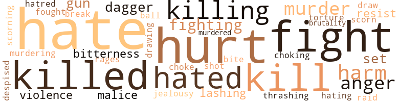
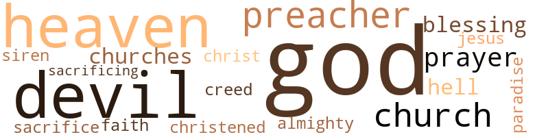

179 violence-related terms matched in this text.
Most frequent terms in this topic: hate (32); hurt (24); fight (17); killed (15); kill (14)

anger.n.01
Definition: a strong emotion; a feeling that is oriented toward some real or supposed grievance
| word |
sentence |
| anger |
An urgent anger and discomfort had driven them away from the place that most Negro families hate . |
| anger |
He was beyond himself with anger . |
| anger |
Her anger leaving very slowly , she was coming back to herself again . |
| anger |
Every line in her beautiful face showed anger . |
contemn.v.01
Definition: look down on with disdain
| word |
sentence |
| despised |
But he had never seen anyone he wanted - no one but her , and at this very moment she hated and despised him for all she was worth . |
| scorning |
He could see them scorning him , saying , " You are not my father . |
| scorn |
She had scorn and hatred in her eyes , because she held malice and contempt in her heart for Joan . |
dagger.n.01
Definition: a short knife with a pointed blade used for piercing or stabbing
| word |
sentence |
| dagger |
It seemed as if some women would drive a dagger into a man 's heart and leave it there for the rest of his life . |
| dagger |
She had no way of knowing his heart felt as if she had plunged a dagger through it . |
| dagger |
Her heart turned to mush just thinking of such things , but she could take a man 's heart and stick a dagger through it and think nothing of it . |
draw.v.23
Definition: pull (a person) apart with four horses tied to his extremities, so as to execute him
| word |
sentence |
| drawing |
She was drawing up like a ball . |
| draw |
Whenever he would try to play with her , she would draw up her shoulders , saying , " Larry , please . " |
ferociousness.n.01
Definition: the trait of extreme cruelty
| word |
sentence |
| brutality |
Right or wrong , they could not defend their family against the brutality of the white man . |
fight.n.02
Definition: the act of fighting; any contest or struggle
| word |
sentence |
| fighting |
Joan was thinking , " Suppose Mrs. Belle had seen Neal and Larry fighting , and had seen how it was . |
fight.n.05
Definition: a boxing or wrestling match
| word |
sentence |
| fight |
She had seen the fight between Larry and Neal , but she was one of those curious creatures who did not want to get mixed up with the law . |
| fights |
She was not for any more fights with him tonight . |
| fight |
He would always feel silly and ridiculous after they had had a big fight with each other . |
| fight |
It was so stupid for a man and wife to fuss and fight with each other . |
| fight |
A few people had gathered around to see a good fight . |
| fight |
People were still standing , waiting to see a good fight , not knowing that it had ended in one way and just begun in another . |
fight.v.02
Definition: fight against or resist strongly
| word |
sentence |
| fight |
He could hear his own voice telling Neal to get up and fight . |
| fighting |
He half-dragged her from the room where his brother lay fighting for sweet life . |
| fight |
You and Mother should not fight like you do . |
| fight |
But now , how could he save money when he had to hire a lawyer to fight his case ? |
| fight |
He went out on the porch , sat down and watched two cats trying to fight . |
| fought |
His mind was carried back to a few days back , when he and Neal had fought . |
| fight |
The human race seemed to fight more than anything else on earth and it was very rare to see any other living creature fighting its mate . |
| fighting |
The human race seemed to fight more than anything else on earth and it was very rare to see any other living creature fighting its mate . |
| fight |
Why should people fight over things they should n't own ? |
| fight |
She smiled at him with that cool gay coaxing smile that he could never fight against . |
| fighting |
I hate men pulling and fighting over me . |
| fight |
" Come on , you bull , and fight ! " |
| fight |
A few moments ago Neal had been ready to fight him . |
| fight |
Larry was standing over him , telling him to get up and fight like a man . |
| fight |
" What right have I to fight Larry 's battles ? " he answered . |
| fight |
He can fight for himself . |
fracture.n.01
Definition: breaking of hard tissue such as bone
| word |
sentence |
| break |
" I really think people have given you a bad break . |
fury.n.01
Definition: a feeling of intense anger
| word |
sentence |
| rages |
It had always amused her to see Joan fly into one of her hot rages . |
gag.v.06
Definition: cause to retch or choke
| word |
sentence |
| choking |
Her voice came in choking sounds . |
| choke |
Oh , how he did want to take her by the neck and choke her until he knew she was dead , but what was he thinking about now ? |
gun.n.01
Definition: a weapon that discharges a missile at high velocity (especially from a metal tube or barrel)
| word |
sentence |
| gun |
Larry had an old gun he had been keeping for a souvenir . |
| gun |
She had thought about the noise the gun would make . |
| gun |
I first wanted to shoot him with that gun - you know the one I am talking about , do n't you , Clark ? " |
harm.v.01
Definition: cause or do harm to
| word |
sentence |
| harm |
He did not believe anyone would harm him , anyway . |
| harm |
She did not really want to harm Clark . |
hate.n.01
Definition: the emotion of intense dislike; a feeling of dislike so strong that it demands action
| word |
sentence |
| hate |
Her hate for him began to mount higher and higher but her face showed no sign of the night heat . |
| hate |
He called her name with hate in his voice . |
| hate |
As she handed Clark the glass , their eyes met in a look full of hate . |
| hate |
It should be called the house of hate . |
| hate |
Nothing now but bitterness and hate was there . |
| hate |
Or was it just a house of hate ? |
| hate |
You know , this world is full of hate and prejudice . |
| hate |
She said it with all the hate a person could have for another . |
| hate |
She would tell him they were having a hard time bringing him up in a world full of hate and cruelty . |
| hatred |
She had scorn and hatred in her eyes , because she held malice and contempt in her heart for Joan . |
| hate |
I know it 's black with cruelty and hate . " |
| hate |
Her mother-in-law looked at her with hate in her eyes but did not say anything as they got into the car . |
hate.v.01
Definition: dislike intensely; feel antipathy or aversion towards
| word |
sentence |
| hate |
I hate people like that . |
| hated |
She hated her mother to see the way Neal was treating her . |
| hate |
She had once been very fond of her only son-in-law , but now , as she stood watching him , she began to hate him . |
| hate |
I hate this as much as you do . |
| hate |
An urgent anger and discomfort had driven them away from the place that most Negro families hate . |
| hate |
" I sometimes hate myself for being such a fool over you , but what can I do ? " |
| hating |
She hesitated , hating to think what she was thinking . |
| hate |
They had grown to hate the rain . |
| hate |
He stopped his mother from talking with the cutting words , " Of course , I know you do n't like Joan and you will do almost anything to make me hate her , but Mother , you are all wrong . |
| hated |
She really hated to hurt her mother-in-law 's feelings , but one day , when they both were trying to do for the same man , Mrs. Blake , Sr. told her daughter-in-law that she wished Joan would come to her for anything she wanted for her son . |
| hate |
I hate to be so brutal , but this is the best time to get things straightened out . " |
| hates |
Your mother just hates me ; that 's all I know . " |
| hated |
Larry hated that his wife and mother had decided to become enemies instead of friends . |
| hated |
She really hated for him to pass by what she said . |
| hate |
Oh , how I hate you . |
| hate |
I hate you so much , Larry Blake . " |
| hate |
Sometimes he wished he could hate her , but could he hate something that was more precious to him than his life ? |
| hate |
Sometimes he wished he could hate her , but could he hate something that was more precious to him than his life ? |
| hated |
But he had never seen anyone he wanted - no one but her , and at this very moment she hated and despised him for all she was worth . |
| hate |
" Now , sometimes you act as if you hate me . |
| hate |
Please do n't hate me , Larry . " |
| hate |
He assured her that he did not hate her and never would . |
| hated |
Larry hated to see that light go out of those little innocent eyes . |
| hate |
He could not understand this about the human race - man and wife sometimes seemed to hate eacli other beyond words . |
| hate |
I hate men pulling and fighting over me . |
| hate |
Believe me , I hate that kind of life . |
| hate |
Suddenly , she had grown to hate him . |
| hate |
He told her that he would hate for them to be enemies , that he wanted to be her friend . |
| hated |
It was in the early nineteenth century when he decided to pack up his few pitiful belongings and travel , but deep in his heart he hated to leave the place that had been his home for thirty years . |
| hated |
Deep in his heart he hated to go back , for he remembered the hateful words one white man had said when he had told him that he was leaving . |
| hated |
She had been cooking for a white family in return for a place to stay and she hated to see her only child leave her . |
| hate |
Laura could have seen her husband 's love for her turn to hate . |
hurt.v.04
Definition: cause damage or affect negatively
| word |
sentence |
| hurt |
His voice sounded hurt as he confessed to her how much he loved her . |
| hurt |
" Oh , I did n't mean any harm , Larry , and I hope you will forgive me if I say anything to hurt your feelings . |
| hurt |
He slapped her across her lovely face , saying , " See how it feels to be hurt ? " |
injury.n.01
Definition: any physical damage to the body caused by violence or accident or fracture etc.
| word |
sentence |
| harm |
They ca n't do you any harm if you do n't let them . |
| hurt |
Mrs. Lee left her daughter 's house feeling hurt to the quick . |
| hurt |
As soon as he got over his hurt feeling he would come to her on bended knees , begging her to forgive him . |
| hurt |
She felt hurt and neglected . |
| hurt |
" Well , it will be my heart , and not yours , " she 'd throw back at her husband , who would leave the house feeling like a hurt child . |
| hurt |
He was thinking that maybe he had been too hard on her , but he knew this would be the best time for him to let his mother know that he was a full-grown man and not the small " boy who use to come to her with every little hurt he received from someone . |
| hurt |
Joan was feeling hurt because her husband had wakened her . |
| hurt |
" Joyce and Jerry , " he said , with a hurt look in his eyes . |
| hurt |
" I sometimes see the hurt on your face . |
| harm |
" Heaven knows I mean no harm in whatever I do , Larry . |
| harm |
" Oh , I did n't mean any harm , Larry , and I hope you will forgive me if I say anything to hurt your feelings . |
| hurt |
The silence was broken by Clark 's saying with hurt and pride in his heavy voice , " Tell me , Joan , what happened . |
| hurt |
" Maybe you will understand , " Clark said , a hurt tone of voice . |
jealousy.n.01
Definition: a feeling of jealous envy (especially of a rival)
| word |
sentence |
| Jealousy |
Jealousy and suspicion crossed her mind . |
kill.v.10
Definition: cause the death of, without intention
| word |
sentence |
| killed |
When Laura saw her husband lying on a slab in the morgue , she looked down into his face , so peaceful in death , and could not help but wonder how and why someone had killed him . |
| killing |
They both seemed to have forgotten that Larry was in jail for killing a man . |
| killed |
He did not stop until he came to the street where Neal had been killed . |
| killed |
Suppose he had been the one who had been killed . |
| killed |
For the life of him , he could not think what had driven him to this part of town that day he had killed Neal . |
| kill |
Some looked like they would kill him for dropping a pin . |
| kill |
Suppose she should kill him ! |
| killed |
No one would know that she had killed him , and , in that way , he would not have to stand trial for killing Neal . |
| killing |
No one would know that she had killed him , and , in that way , he would not have to stand trial for killing Neal . |
| killing |
" That way I will be killing two birds with one stone . " |
| kill |
She would go to the drugstore and get something that would kill him right away . |
| killed |
I know it was because of me that you killed Neal . |
| killed |
Only she and Clark would know what had killed him . |
| killing |
These were the words she had been waiting for him to say to her but she did not know how to tell her brother-in-law that she was killing her husband so she could be with him for ever and ever . |
| kill |
Last night , while I was lying in bed , I decided to kill Larry so you and I could be together . |
| kill |
" You mean to stand here and look me in my face and tell me that you administered poison to kill my brother - my one and only brother , your husband , and your children 's father ? |
| kill |
CLARK HAD CONVINCED HIS sister-in-law she should not try again to kill Larry with poison . |
| kill |
I ca n't let you kill him like you would a rat . " |
| kill |
Was Larry telling his sister that she had tried to kill him and their brother had stopped her ? |
| killed |
He could not bring himself to say the words - that he had killed Neal Whitfield . |
| kill |
It seemed like he wanted to kill her . |
| kill |
" Oh , I could kill you , " he shouted . |
| kill |
" Not here . . . Well , who was trying to kill me ? |
| killed |
It used to be if you killed a man in self defense or it was accident , it was called fair play . |
| killed |
" I wish it had been you who got killed instead of Neal . " |
| killing |
Nothing but killing a man . " |
| killed |
I have n't killed anyone . " |
| killed |
What a joke it would be on the policeman who had said he had killed him , if Neal should suddenly open his mouth and speak . |
| killed |
It was hard for him to realize that he had killed a man . |
| killed |
He had never killed anyone before , so how could such a dreadful thing happen now ? |
| kill |
I could kill you and think nothing of it . " |
| killing |
Could she tell them that she had been the cause of their father 's killing a man ? |
| killing |
" Clark , what 's this I hear about Larry being in jail for killing a man ? |
| kill |
Joan did not make Larry kill anyone . " |
| kill |
A few minutes ago he had wanted to kill this beast who was a woman . |
| killed |
I killed a white man and you know what would become of me if they should ever find me . " |
killing.n.01
Definition: an event that causes someone to die
| word |
sentence |
| killings |
If it was , I would have two killings to answer for , " he said in a low voice , his muscles holding his hands down by his side to keep from hitting her . |
malice.n.01
Definition: feeling a need to see others suffer
| word |
sentence |
| malice |
Joan looked at her husband with meek and sleepy eyes , but her heart was full of malice and evil . |
| malice |
She had scorn and hatred in her eyes , because she held malice and contempt in her heart for Joan . |
murder.n.01
Definition: unlawful premeditated killing of a human being by a human being
| word |
sentence |
| Murder |
Murder was more than he could possibly think she would do . |
| murder |
" Nothing but a little case of murder . |
| murder |
Just a case of murder , " he told Larry , putting handcuffs on his arms . |
| murder |
They could have seen murder and violence . |
murder.v.01
Definition: kill intentionally and with premeditation
| word |
sentence |
| murdering |
It 's better than murdering him . |
| murdered |
" Who 's been murdered ? |
musket_ball.n.01
Definition: a solid projectile that is shot by a musket
| word |
sentence |
| ball |
She was drawing up like a ball . |
pain.v.02
Definition: cause emotional anguish or make miserable
| word |
sentence |
| hurt |
" Never mind , " the stranger said , " I wo n't hurt you . |
| hurt |
I thought you were hurt . " |
| hurt |
I really do n't want to hurt you . |
| hurt |
She looked very hurt because she had not gotten her way . |
| hurt |
She was hurt deeply because she could not help him with his problem . |
| hurt |
I would not hurt you for anything on earth . |
| hurt |
" Just this once wo n't hurt me , " he said to himself in an effort to keep his self-respect . |
| hurt |
When I first saw you this evening , you were so miserable and hurt that it would not have taken much to make you cry your eyes out . " |
| hurt |
It wo n't hurt , will it ? |
| hurt |
He did not want them to say anything to hurt Joan 's feelings . |
| hurt |
She did not feel sorry for saying them to Joan but she was hurt because she was a Christian and she knew that God was frowning upon her . |
raid.v.01
Definition: search without warning, make a sudden surprise attack on
| word |
sentence |
| raid |
She always liked to raid the icebox after everyone was in bed . |
resentment.n.01
Definition: a feeling of deep and bitter anger and ill-will
| word |
sentence |
| bitterness |
" Larry , do you mean to tell me you think I am not trying to get along with your mother ? " she asked him with lashing bitterness . |
| bitterness |
Nothing now but bitterness and hate was there . |
resist.v.04
Definition: withstand the force of something
| word |
sentence |
| resist |
Each was just another black family that had decided on the Great North whose call of freedom had been too strong to resist . |
| resist |
" I just ca n't resist you , Joan . " |
shoot.v.02
Definition: kill by firing a missile
| word |
sentence |
| shot |
His eyes had shot open . |
sic.v.01
Definition: urge to attack someone
| word |
sentence |
| set |
He has his little heart set on getting it and I have my heart set on his having it . |
| set |
He has his little heart set on getting it and I have my heart set on his having it . |
| set |
" Well , Joan , you have your heart , soul and mind set on going to Michigan , so there is very little that I can say or do , is there ? " he asked , looking at her seriously . |
sting.n.03
Definition: a painful wound caused by the thrust of an insect's stinger into skin
| word |
sentence |
| bite |
" Just looking for a little bite to eat . |
thrashing.n.01
Definition: a sound defeat
| word |
sentence |
| thrashing |
Mrs. Blake would say thrashing words to her new daughter-in-law , although Joan tried to show respect for her because she was her husband 's mother . |
torment.v.01
Definition: torment emotionally or mentally
| word |
sentence |
| torture |
She would torture them into agony and then would get great joy out of their suffering . |
violence.n.01
Definition: an act of aggression (as one against a person who resists)
| word |
sentence |
| violence |
Joan called his name with such strength and violence that it made a change come over his body . |
| violence |
They could have seen murder and violence . |
whip.v.04
Definition: strike as if by whipping
| word |
sentence |
| lashing |
As he spoke these lashing words , he left the house . |
| lashing |
" Larry , do you mean to tell me you think I am not trying to get along with your mother ? " she asked him with lashing bitterness . |
63 religion-related terms matched in this text.
Most frequent terms in this topic: God (20); church (5); heaven (5); devil (4); preachers (3)

baptize.v.01
Definition: administer baptism to
| word |
sentence |
| christened |
I was the one who christened you . " |
blessing.n.05
Definition: the act of praying for divine protection
| word |
sentence |
| blessing |
His father had given him his blessing . |
| blessing |
So , you see , I am doing you a great blessing by even speaking to you . " |
church.n.02
Definition: a place for public (especially Christian) worship
| word |
sentence |
| church |
He was near the town 's little church and for some reason he stood in front of it , looking at it . |
| churches |
He had never believed in churches or preachers . |
| church |
He had not been in church since he had been a child . |
| church |
His mother always sent him to Sunday School , but it had been hard for her to keep him in there for church . |
| church |
And now he was standing at the church door , wondering if he should go in , when lie saw Rev. Bailey coming from the parish . |
| church |
I have been to church . " |
| churches |
About people , churches and things like that . |
creed.n.01
Definition: any system of principles or beliefs
| word |
sentence |
| creed |
Never look to any man for what you can do for yourself , regardless of race , creed or color . |
eden.n.01
Definition: any place of complete bliss and delight and peace
| word |
sentence |
| heaven |
When Mr. Blake left his house he felt the wind blowing hard up towards the high heaven . |
| heavens |
The thunder was roaring from the high heavens , lightning was playing across ( he dark sky . |
| heaven |
" So just forget it , please , for heaven 's sake , " he added . |
| heaven |
" For heaven 's sake . |
| heaven |
I pray in heaven 's name that you will . " |
god.n.03
Definition: a man of such superior qualities that he seems like a deity to other people
| word |
sentence |
| God |
At the end of his first day , as he headed back to the place he called home , he felt that he could be thankful , for no one could tell him anything else except that God had gotten him that job . |
| God |
Only thinking how they could be together to enjoy each other like God intended for man and woman . |
| God |
Try to make them understand that they were put here by God and not by man . |
| God |
God did not intend that . |
| God |
He thought of David calling on God for help if He could help him . |
| God |
Who was God , anyway ? |
| God |
He wondered if any man knew who God was , and why was there always so much mystery about this unseen power . |
| God |
Was man made to understand God and His works ? |
| God |
Others said they only knew what God said and that was all he had ever known about this unseen - was it man ? |
| God |
He asked her point blank if she believed there was a God . |
| God |
" Yes , there must be a God somewhere who made the Spring , the Summer , the Winter , and all the beautiful things of Mother Earth I The beautiful flowers of the forest and the sea . |
| God |
His mother used to tell him so many times to never let his color get him down , because God had made every man and woman there , was on earth . |
| God |
Sometimes he would ask her , " Are you sure , Mother , that God made everthing on earth ? " |
| God |
Oh , there must be a way out of it somehow , but , for God 's sake , I ca n't seem to find it anywhere . |
| God |
And that was the beginning of one of the wickedest black women who ever treaded on God 's green earth . |
| God |
They wished only to be left alone and given a chance to live their lives as God had intended them to live . |
| God |
She opened the car door and got in , saying to herself that she would ask God to forgive her for the mean and nasty words she had used . |
| God |
She did not feel sorry for saying them to Joan but she was hurt because she was a Christian and she knew that God was frowning upon her . |
| God |
Why should God punish her like this ? |
| God |
She asked God to forgive her for everything mean that she had done . |
godhead.n.01
Definition: terms referring to the Judeo-Christian God
| word |
sentence |
| Almighty |
Looking at the black clouds rolling over the sky , he also whispered a silent prayer to the Almighty asking Him to hold back the rain until he could find a job . |
heaven.n.02
Definition: the abode of God and the angels
| word |
sentence |
| heaven |
He had come to a place called heaven and now he felt like he had landed on the very bottom of hell . |
hell.n.01
Definition: any place of pain and turmoil
| word |
sentence |
| hell |
" Well , that is good in one way , " he said , " and hell on earth in another . |
| hell |
" What in the hell has happened to Larry , " she half-whispered to herself . |
jesus.n.01
Definition: a teacher and prophet born in Bethlehem and active in Nazareth; his life and sermons form the basis for Christianity (circa 4 BC - AD 29)
| word |
sentence |
| Jesus |
" You should remember they talked about Jesus Christ . |
messiah.n.01
Definition: any expected deliverer
| word |
sentence |
| Christ |
" You should remember they talked about Jesus Christ . |
paradise.n.02
Definition: (Christianity) the abode of righteous souls after death
| word |
sentence |
| paradise |
King City , Illinois , was not very far from Chicago , and the oldest Blakes were in a second paradise . |
prayer.n.01
Definition: the act of communicating with a deity (especially as a petition or in adoration or contrition or thanksgiving)
| word |
sentence |
| prayer |
She knew that He would answer her prayer . |
| prayer |
Looking at the black clouds rolling over the sky , he also whispered a silent prayer to the Almighty asking Him to hold back the rain until he could find a job . |
| prayer |
She had been so busy in her silent prayer that she had n't noticed that the car had come to a stop . |
preacher.n.01
Definition: someone whose occupation is preaching the gospel
| word |
sentence |
| preachers |
He had never believed in churches or preachers . |
| preacher |
He had n't been interested in what the preacher had to say . |
| preacher |
He would always ask , " How does the preacher know so much ? " |
| preachers |
He could not understand why preachers did n't do as they told others to do . |
| preacher |
For the first time , what the preacher was saying was clear to him , for he could hear his own voice saying : " The Lord is my shepherd ; I shall not want . |
| preachers |
She did not believe in preachers . |
religion.n.01
Definition: a strong belief in a supernatural power or powers that control human destiny
| word |
sentence |
| faith |
He showed great signs of faith in his wife now , after she had told him that she meant to go straight . |
sacrifice.v.04
Definition: make a sacrifice of; in religious rituals
| word |
sentence |
| sacrifice |
Do you really love me enough to sacrifice everyone else ? |
| sacrificing |
As they neared the place where the inquest was to be held , Mrs. Blake could not help but think about how she had always been sacrificing herself for her three children . |
satan.n.01
Definition: (Judeo-Christian and Islamic religions) chief spirit of evil and adversary of God; tempter of mankind; master of Hell
| word |
sentence |
| devil |
Once a devil always a devil . |
| devil |
Once a devil always a devil . |
| devil |
You have destroyed everything I have , you little wicked devil . |
| Devil |
She was handed her precious little baby of Devil and deceit . |
| devil |
" Come here to me , you little devil . " |
| Devil |
She told them once , when they were questioning her about her complexion , that she was that color because the Devil was her master . |
| Devil |
Most of them had been taught that the Devil was a bad man , but Joan showed pride in her lovely little face as she called the bad man 's name . |
siren.n.01
Definition: a sea nymph (part woman and part bird) supposed to lure sailors to destruction on the rocks where the nymphs lived
| word |
sentence |
| siren |
He heard the police siren coming down the street and saw the ambulance coming behind it . |